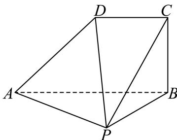

填空题
按本区原卷题号顺序排列。
金山 · 第1题 ★☆☆☆☆ · 教师预估
已知集合 A={x∣x2−5x+6=0},B={2,4,6} ，则A ∩ B =
金山 · 第2题 ★☆☆☆☆ · 教师预估
已知复数 z 满足 (1 + i)z = 1 − i（ i 为虚数单位），则 z =
金山 · 第3题 ★☆☆☆☆ · 教师预估
已知向 Ea=(x,1),b=(1,2−x) ， Πa//b ，则实数x =
金山 · 第4题 ★☆☆☆☆ · 教师预估
若α为第二象限角，且 sinα=54 ，则tan α = .
金山 · 第5题 ★★☆☆☆ · 教师预估
本题资料或解析有待核事项，预览不可作为已审定成品。
在 (ax+x1)♯ 展开式中x的系数为80，则实数a的值为
金山 · 第6题 ★☆☆☆☆ · 教师预估
若直线l是曲线 ⌊y=x−12 在x = 3处的切线，则l的斜率为
金山 · 第7题 ★★☆☆☆ · 教师预估
已知圆锥底面半径为1，高为 3, ，则过圆锥母线的截面面积的最大值为
金山 · 第8题 ★★☆☆☆ · 教师预估
已知 {an} 是等差数列，若 a˙3,a7 分别是函数 y=x2−4x+ 2的两个零点，则 a5=
金山 · 第9题 ★★☆☆☆ · 教师预估
投篮测试中，每人投3次，至少投中2次才能通过测试.已知某同学每次投篮投中的概率为0.6，且各次投篮是否投中相互独立，则该同学通过测试的概率为
金山 · 第10题 ★★★☆☆ · 教师预估
本题资料或解析有待核事项，预览不可作为已审定成品。
已知函数 ⋅y=g(x) 的图象是折线段 ABC ，且 A(0,0),B(21,21),C(1,0) ，则函数y=x⋅g(x)(0≤x≤1) )的图象与x轴围成的图形面积为
金山 · 第11题 ★★★★☆ · 教师预估
如图，现对某景区一长 AB=600m ，宽 AD=360m 的矩形空地进行建设.规划在边AB,AD上分别取点M,N修建人行步道（不考虑宽度），且满足点A关于步道MN的对称点E在边DC上.在△AMN内种植花卉，在△EMN内搭建娱乐设施，其余区域规划为露营区，则人行步道MN的最短距离为m.（结果精确到1m）

金山 · 第12题 ★★★★☆ · 教师预估
本题资料或解析有待核事项，预览不可作为已审定成品。
i×πx1,x2,x3,x4,x5 均是正整数，且
{x∣x∣x=xmxnxpxq,1≤m<n<p<q≤5}={108,144,288,432}, : : :∀∥x1+x2+x3+x4+x5 的值为
选择题
按本区原卷题号顺序排列。
金山 · 第13题 ★★☆☆☆ · 教师预估
本题资料或解析有待核事项，预览不可作为已审定成品。
已 ℑa∈R ，则下列结论不恒成立的是（ ）
A. a+1>a
B. a+a1≥2
C. ∣1−a∣+∣a+2∣≥3
D. a2+a+1>0
金山 · 第14题 ★★☆☆☆ · 教师预估
本题资料或解析有待核事项，预览不可作为已审定成品。
某人统计了甲、乙两家零售商店在周一到周五的营业额（单位：百元）情况，得到了如下的茎叶图（其中茎表示十位数，叶表示个位数），关于这5天的营业额情况，下列结论正确的是（ ）

A. 甲、乙两家商店营业额的极差相同
B. 甲、乙两家商店营业额的中位数相同
C. 从营业额超过3000元的天数所占比例来看，甲商店较高
D. 甲商店营业额的方差小于乙商店营业额的方差
金山 · 第15题 ★★★☆☆ · 教师预估
已知定义在R上的函数 y=f(x) ，满足以下两个条件：（1）f(x) > 0对任意x ∈ R恒成立，且f(1)=1; (2) 对任意 x1,x2∈R 都有 f˙(x1+2x2)=4f(x1)⋅f2(x2) ，则下列关于函数 ⋅y=f(x) )的表述中正确的个数为（ ）① f(0)=21; 2◯f(x)⋅f(−x)=41 ；③函数y = f(x)有最小值.
A. 0
B. 1
C. 2
D. 3
金山 · 第16题 ★★★★☆ · 教师预估
本题资料或解析有待核事项，预览不可作为已审定成品。
已知点A (x1,y1) 在圆 x2+y2=9. 上，点 B(x2,y2) 在圆 x2+y2=12 上，且
x1x2+y1y2=x1+x2−1 ,O为坐标原点.对于以下两个命题，判断正确的是（ ）
①在坐标平面内存在点P，使得 AP⊥BP 恒成立；
②三角形OAB面积的最小值为 22
A. ①是真命题，②是真命题
B. ①是假命题，②是真命题
C. ①是真命题，②是假命题
D. ①是假命题，②是假命题
解答题
按本区原卷题号顺序排列。
金山 · 第17题 ★★★☆☆ · 教师预估
已知函数 y=f(x) 是定义在R上的奇函数，当 x>0 时， f(x)=log2x
(1) (6分)求 f(−2)+f(0) 的值；
(2) (8分)若 :g(x)=f(x)⋅f(4x),x∈[1,8] ，求函数 (y=g(x) 的值域.
金山 · 第18题 ★★★☆☆ · 教师预估

如图，在四棱锥 P−ABCD 中，PA⊥平面 PBC,AB=2DC=4,BC=22,AB⊥BC,DC//AB
(1) (6分)证明：平面 ABCD⊥ 平面 PAB
(2) (8分)若 ∠ABP=3π ，求点C到平面PAD的距离.
金山 · 第19题 ★★★☆☆ · 教师预估
本题资料或解析有待核事项，预览不可作为已审定成品。
为了研究高三学生每天整理数学错题的情况，某校数学建模兴趣小组的同学在本校高三年级学生中采用随机抽样的方法抽取了40名学生，调查他们平时的数学成绩和整理数学错题的情况，现统计得部分数据如下：
| 整理数学错题情况 |
数学成绩总评优秀人数 |
数学成绩总评非优秀人数 |
合计 |
| 每天都整理数学错题人数 |
14 |
|
|
| 不是每天都整理数学错题人数 |
|
15 |
20 |
| 合计 |
|
|
40 |
(1) (4分)完成上述样本数据的2 × 2列联表，并计算：每天都整理数学错题且数学成绩总评优秀的经验概率；
(2) (4分)是否有99%的把握认为“数学成绩总评优秀与每天都整理数学错题有关”？
附： χ2=(a+b)(c+d)(a+c)(b+d)n(ad−bc)2;
| 显著性水平 |
0.10 |
0.01 |
0.001 |
| χ2 临界值 |
2.706 |
6.635 |
10.828 |
(3) (6分)从不是每天都整理数学错题的学生中随机抽取3名学生做进一步访谈，设恰好抽取到数学成绩总评优秀的人数为X，求X的分布列和期望.
金山 · 第20题 ★★★★★ · 教师预估
本题资料或解析有待核事项，预览不可作为已审定成品。
已知椭圆Γ: 4x2+3y2=1 ，左右焦点分别为 F1,F2 ，上下顶点分别为A,B，左右顶点分别为 C,D, P,Q是Γ上异于椭圆顶点的两点.
(1) (4分)求 △AF1F2 的周长；
(2) (6分)若点Q在第一象限且满足 .△ABQ 的面积比 △F1F2Q 的面积大，求点Q的横坐标的取值范围；
(3) (8分)记点A在直线PQ上的投影为H，且直线CP的斜率是直线DQ的斜率的3倍，试判断：过点A,H,O(O为坐标原点)三点的圆是否为定圆？若是，求出该圆的方程；若不是，请说明理由.
金山 · 第21题 ★★★★★ · 教师预估
本题资料或解析有待核事项，预览不可作为已审定成品。
若函数y = f (x)和y = g (x)同时满足下列条件：①对任意x ∈ R，都有 f(x)≤g(x) 成立；②存在x0∈R ，使得 f(x0)=g(x0) ，则称函数 y=g(x) 为y = f(x)的“W函数”，其中 x0 称为“W点”.
(1) (4分)已知图像为一条直线的函数 y=g(x) 是y = sinx的“W函数”，请求出所有的“W点”；
(2) (6分)设函数y = g(x)为y = f(x)的“W函数”，其“W点”组成集合M；函数 y˙=h(x)y˙y=g(x) 的“W函数”，其“W点”组成集合N.试证明：“函数y = h(x)为y = f(x)的‘W函数’”的一个充分必要条件是 ∂⋅M∩N=∅⋅′ ；
(3) (8分)记 {f(x)=exx （e为自然对数的底数）， g(x)=kx+m(k,m∈R) )，若 y=g(x) 为y=f(x) )的“W函数”，且 ∗W∗∗∗x0>0 ，求实数m的最大值.